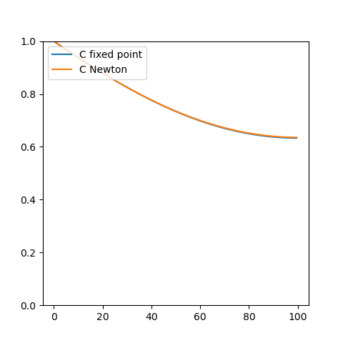
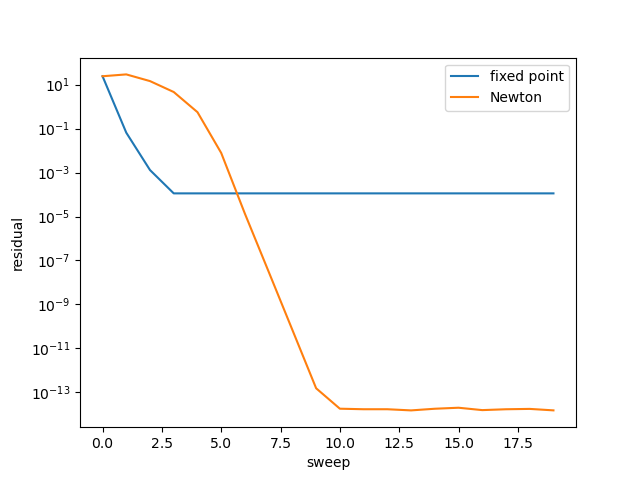

examples.diffusion.newton¶
Perform Newton iterations to solve non-linear equations.
>>> import fipy as fp
>>> from matplotlib import pyplot as plt
We wish to solve a single diffusion equation in 1D, where the diffusion coefficient is a nonlinear function of the solution variable.
>>> mesh = fp.Grid1D(nx=100, dx=1.)
>>> C = fp.CellVariable(name="C", mesh=mesh, value=0., hasOld=True)
>>> Cface = C.faceValue
>>> eq = (fp.TransientTerm(var=C)
... == fp.DiffusionTerm(coeff=(3 + Cface**3) * (2 + Cface**2), var=C))
subject to the boundary condition
>>> C.constrain(1., where=mesh.facesLeft)
We start by solving with fixed-point iterations. We’ll collect residuals for comparison later. We’ll take multiple sweeps of this non-linear equation for a single, large time step.
>>> fixedPoint = []
>>> C.updateOld()
>>> for sweep in range(20):
... res = eq.sweep(dt=1000.)
... fixedPoint.append([sweep, res])
Store the result for comparison later:
>>> Cfixed = C.copy()
>>> Cfixed.name = "C fixed point"
For Newton’s method, we solve the set of equations \(\mathbf{F}(\mathbf{x})\) on the variables \(\mathbf{x}\) by the first order Taylor expansion
where \(\mathbf{J}\) is the Jacobian of \(\mathbf{F}\):
and \(\delta \mathbf{x}\) is the variation in \(\mathbf{x}\).
Let us find
where \(\delta\) is a variation operator, such that for
then
There’s probably a more proper way to get here via variational derivatives and the Euler-Lagrange equation, but it’s leaving me with a couple of extra terms that blow up the solution. More rigororous derivations are welcome.
>>> deltaC = fp.CellVariable(mesh=mesh, name=r"$\delta C$", hasOld=True)
>>> newtonEq = ((fp.TransientTerm(var=deltaC)
... == fp.ConvectionTerm(coeff=(3*Cface**2*(2 + Cface**2)
... + (3 + Cface**3)*2*Cface) * C.faceGrad,
... var=deltaC)
... + fp.DiffusionTerm(coeff=(3 + Cface**3) * (2 + Cface**2), var=deltaC))
... + fp.ResidualTerm(equation=eq, underRelaxation=1.))
At a Dirichlet boundary, the value of \(C\) is determined by the boundary condition and its variation is zero:
>>> deltaC.constrain(0., where=mesh.facesLeft)
We reset the solution and its variation and, again, collect residuals for later comparison.
>>> C.value = 0
>>> deltaC.value = 0
Note
It’s necessary to reset the variation in the solution at every sweep, to prevent Newton increments from the previous linearization from entering the new off-diagonal Jacobian terms as explicit source values (thanks to @sbtristan98!).
>>> newton = []
>>> C.updateOld()
>>> deltaC.updateOld()
>>> for sweep in range(20):
... deltaC.value = 0.
... res = newtonEq.sweep(dt=1000.)
... C.value = C.value + deltaC.value
... newton.append([sweep, res, max(abs(deltaC))])
and examine the result:
>>> Cnewton = C.copy()
>>> Cnewton.name = "C Newton"
The solutions agree, although not terribly well.
>>> print(Cnewton.allclose(Cfixed, rtol=4e-3))
True
>>> if __name__ == '__main__':
... viewer = fp.Viewer(vars=(Cfixed, Cnewton),
... datamin=0.,
... datamax=1.)
... viewer.plot()
{kind=link}

Convert residual lists into arrays
>>> fixedPoint = fp.numerix.array(fixedPoint)
>>> newton = fp.numerix.array(newton)
and compare convergence, observing that the Newton iterations converge to a much smaller residual than the fixed point iterations:
>>> print(fixedPoint[10, 1] > 1e-4)
True
>>> print(newton[10, 1] < 1e-13)
True
>>> if __name__ == '__main__':
... plt.figure()
... plt.semilogy(fixedPoint[...,0], fixedPoint[..., 1], label="fixed point")
... plt.semilogy(newton[...,0], newton[..., 1], label="Newton")
... plt.ylabel("residual")
... plt.xlabel("sweep")
... plt.legend()
... plt.show()
>>> if __name__ == '__main__':
... input("Single equation fixed-point vs Newton iteration. Press <return> to proceed...")
{kind=link}
